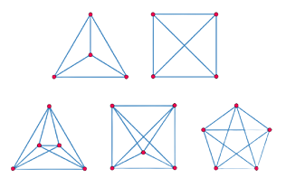

Поиск оптимального пути в графе. Такая задача встречается довольно часто и в повседневной жизни, и в мире технологий.
Граф
абстрактный математический объект, представляющий собой множество вершин графа (обозначены красным цветом) и набор рёбер (обозначены синим), то есть соединений между парами вершин. При этом каждое ребро представляет собой отношение двух вершин.
Виды графов

рис.1
Как правило, граф обозначают как набор вершин и рёбер G = (V,E), где число рёбер может быть задано а вершин числом
Для каждого ребра в графе задан неотрицательный вес а также вершина, из которой осуществляется поиск оптимальных путей.
Графы делятся на:
— Неориентированные и ориентированные (когда движение по ребру возможно только в одну сторону)
— Взвешенными (когда у вершины или у ребра есть вес, отличающий его от другого) и невзвешенный.
— И другие более сложные графы (мультиграф, псевдограф, изоморфный граф и другие).